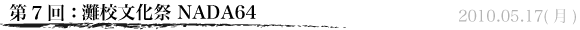

お久しぶりです。元（！）生徒会長の池尻です。
そう、なんと、生徒会は６月末に代替わりを終えました。５８代生徒会は５９代生徒会へとその活動を引き継ぎました。
ということで、このブログは僕が書く最後の記事です。
一年間の生徒会活動を振り返ってみると、楽しかったことはもちろんのこと、しんどかったことやつらかったことも（あまりありませんでしたが…）含めて、何もかもが今ではいい思い出です。活動自体に関しても、できる限りのことはすべてできたと思っています。そして、それはひとえに生徒会の皆や、協力してくれたすべての人のおかげだと心から感謝しています。僕にとってこの一年間に友達や後輩、たくさんの人と積み上げてきた時間は一生の宝物になると確信しています。
さて、５８代生徒会の活動の中でも特に目立っていた生徒会HPリニューアルに伴うこの生徒会ブログに関してですが、web委員長伴君の尽力によりすっかり軌道に乗りました。学校宛にファンレターまで頂いて、本当に感謝しています。この生徒会ブログは５９代生徒会でも更新を続けていくつもりだと聞いています。今後は新生徒会長の吉川慶彦君がおもしろい記事をあげてくれることと思いますので、また是非ご覧になってください。
これまでどうもありがとうございました。これからも灘校生徒会をどうぞよろしくお願い致します！
さようなら〜(^^)／